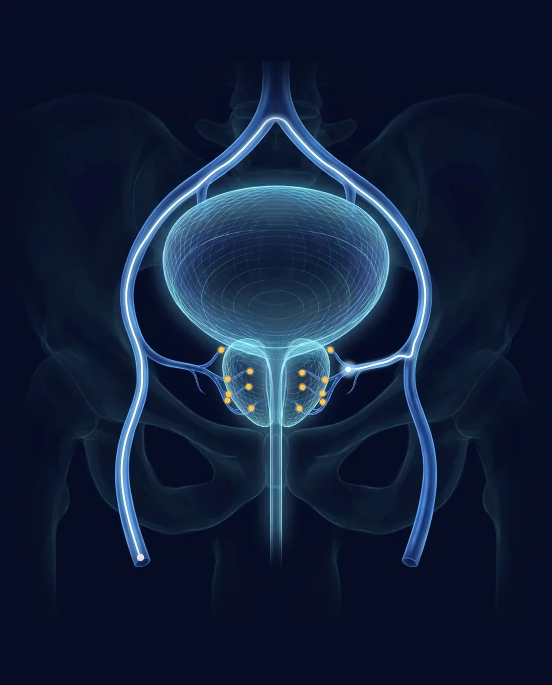

PAE in Orange County,
led by your urologist
In Orange County, PAE is usually run start to finish by radiology clinics. Here a urologist leads it: Dr. Hari Sawkar decides whether PAE is right for you, prepares you, and manages your recovery, while an experienced interventional radiologist performs the embolization itself in the practice's own outpatient lab.

Medically reviewed by Hari Sawkar, MD, board-certified urologist · Updated November 2026
Why your PAE should be led by a urologist
Urologist-led PAE means a urologist runs your whole course of care for prostate artery embolization, from diagnosis and candidacy to preparation and follow-up, while an interventional radiologist performs the embolization itself. Most prostate artery embolization programs are run start to finish by radiology practices, which see you for the procedure and send you back to urology for everything else. This practice splits the work the way it should be split: Dr. Sawkar, a board-certified urologist, decides whether PAE is right for you, prepares you for it, and manages your recovery, and an experienced interventional radiologist performs the embolization itself, right in the practice's own outpatient lab.
An unbiased recommendation
Dr. Sawkar performs UroLift, Rezūm, and Aquablation and leads PAE care, so PAE is recommended only when it is truly the best fit for your anatomy and goals, never because it is the only option on offer.
Candidacy confirmed, not assumed
A urologist checks that the prostate is actually the problem first: symptom score, post-void residual, prostate volume, PSA, and cystoscopy when indicated, then the arterial imaging.
One urologist, before and after
Preparation beforehand, and then retention, an infection, a slow start, or a result that is not enough, are all handled by your urologist, with the next option already in the room.
| PAE at a radiology clinic | Urologist-led PAE here | |
|---|---|---|
| Who decides you need treatment | The clinic, after a referral or self-referral | A urologist, after ruling out bladder problems, strictures, and infection, and screening for prostate cancer |
| Options on the table | PAE | PAE, UroLift, Rezūm, Aquablation, medication, or watchful waiting |
| Who performs the embolization | An interventional radiologist | An interventional radiologist |
| Where it happens | A radiology clinic or hospital imaging suite | The practice's own outpatient lab |
| A catheter, an infection, or a fever afterward | Usually back to a urologist | Managed by your urologist |
| If PAE is not enough | Usually a new referral and a new workup | Decided by the same urologist, with the same records |
| Your point of contact | The clinic, then a urologist | Your urologist, before and after |
Typical patterns, not a comment on any individual program. The embolization is performed by an interventional radiologist either way; the difference is who owns your care around it. Read the full comparison of urologist-led PAE and a radiology clinic.
How PAE works
Prostate artery embolization is an image-guided procedure done through a pinhole in the groin. A thin catheter reaches the arteries feeding the prostate, where tiny microspheres reduce its blood supply. Over the following weeks, the prostate gradually shrinks and the pressure on the urethra eases.
Because it is one of the least invasive treatments for an enlarged prostate, with a high rate of success, PAE is a strong first option for most men, not a last resort. It works across a wide range of prostate sizes, including very large ones, and is performed in the practice's own outpatient lab rather than a hospital operating room.
Conscious sedation
Light sedation and local anesthesia at the access point in the groin. No general anesthesia.
Arterial mapping
A micro-catheter is guided by live X-ray to map the prostatic arteries with precision.
Microsphere injection
Tiny biocompatible particles reduce blood flow to the enlarged tissue on both sides.
Outpatient recovery
Most men go home the same day. The prostate shrinks over 4 to 12 weeks as symptoms ease.
Why men choose PAE
No cuts to the prostate
The prostate is never cut or entered. Everything is done through a pinhole in the groin.
No general anesthesia
Performed under light sedation and local anesthesia.
A first option, not a last resort
Among the least invasive BPH treatments, with a high success rate, it is a strong early choice for most men.
Works for nearly any size
Effective across the full range of prostates, including very large ones where other options reach their limit.
Also when surgery isn't an option
Suitable for men who cannot stop blood thinners or are not good candidates for surgery.
Little to no recovery
Home the same day, and most men are back to work and normal activity by the next, with little to no pain.
Is PAE right for you
Prostate artery embolization has one of the widest candidacy ranges in BPH care. Imaging confirms the fit before anything is scheduled, and these are the men it tends to fit best.
Symptoms medication no longer controls
Moderate to severe symptom scores, especially when pills have stopped helping or their side effects have become their own problem.
Large and very large prostates
PAE stays effective at 80, 100, even 200 cc, sizes where most office procedures are no longer designed to go.
Sexual function is non-negotiable
Ejaculation and erections are preserved in the large majority of men, which makes PAE a natural fit when that matters most.
On blood thinners
The prostate is reached through its arteries, so most men do not need to stop anticoagulation for the procedure.
Living with a catheter
For men in urinary retention, PAE offers a real path back to natural voiding without surgery.
Not fit for, or done with, the operating room
Age, heart or lung conditions, or a simple preference to avoid surgery all point the same way.
PAE is not the answer for everyone. Very small glands, symptoms driven mainly by the bladder rather than the prostate, or arteries narrowed by vascular disease can tip the recommendation toward UroLift, Rezūm, or Aquablation instead. Because Dr. Sawkar offers all of them, the recommendation follows your anatomy, not the practice's equipment list.
What the evidence shows
PAE has been studied for more than a decade across randomized trials, large registries such as UK-ROPE, and long-term follow-up series, and it now appears in American Urological Association guidance as an option for appropriately selected men. Compared with TURP, the traditional surgical benchmark, PAE approaches similar symptom relief with fewer sexual side effects, no hospital stay, and a faster return to routine, in exchange for a somewhat higher chance of wanting a repeat treatment years later. That trade-off is exactly what the consultation walks through.
Symptom relief
Across published studies, symptom scores typically fall by half or more, with urinary flow improving as the prostate shrinks. Most of the change arrives by the twelve-week mark.
Sexual function
Retrograde ejaculation, nearly universal after traditional prostate surgery, is uncommon after PAE. Erections are typically unaffected, and some series report modest improvement.
Durability
Relief lasts years for most men. Roughly one in five eventually chooses a repeat embolization or a different procedure, and PAE closes no doors: every other option remains fully available.
Key sources: the American Urological Association guideline on BPH management, the UK-ROPE registry study, and NICE interventional procedures guidance IPG611 on prostate artery embolization.
Your PAE, visit by visit
Consultation and imaging
A symptom score, PSA review, and prostate measurement by ultrasound or MRI. If PAE looks right, the arterial anatomy is mapped so the day itself holds no surprises.
Procedure day
Arrive in the morning and receive light sedation; an experienced interventional radiologist performs the embolization. The embolization usually takes about an hour, sometimes longer for complex anatomy, and after a short recovery you go home the same day, usually without a catheter.
The weeks after
Expect a few days of mild pelvic ache or urinary urgency, managed with simple medication; most men are back at work within a day or two. Symptoms are rechecked at six and twelve weeks as the prostate shrinks, with telehealth follow-up when that is easier.
Common questions about PAE
Is PAE covered by Medicare or PPO insurance
Yes. PAE is typically covered by Medicare and most PPO and commercial insurance plans. The office verifies your specific coverage before the procedure and explains any out-of-pocket cost.
How long does recovery take
Most men go home the same day and return to work and normal activity within a day or two. Some notice mild pelvic discomfort or urinary symptoms for a few days. Urinary symptoms then improve gradually over 4 to 12 weeks as the prostate shrinks.
Does PAE work for very large prostates
Yes. PAE is effective across a wide range of prostate sizes, including very large glands where some other minimally invasive options reach their limits.
Is the procedure painful
PAE is performed under light sedation with local anesthesia at the access site in the groin. Most men report minimal discomfort during the procedure, and no general anesthesia is required.
How is PAE different from surgery
PAE treats the prostate from inside its blood vessels, through a pinhole in the groin. The prostate is never cut or entered through the urethra, there is no general anesthesia, and most men do not need a catheter afterward.
Who is a good candidate for PAE
Most men with bothersome urinary symptoms from an enlarged prostate are candidates. PAE is also well suited to men who cannot stop blood thinners or are not good candidates for surgery. A consultation with imaging confirms whether it fits your anatomy.
Who leads my PAE care
Dr. Sawkar, a board-certified urologist and Chief of Urology at Providence St. Joseph Hospital, leads your PAE care from the first consultation through recovery: he decides whether PAE is the right procedure, prepares you for it, and manages everything afterward. The embolization itself is performed by an experienced interventional radiologist, and because the practice offers every major BPH treatment, PAE is recommended only when it is the right fit for you.
What are the side effects of PAE
The common ones are temporary: pelvic discomfort, urinary urgency or burning, and sometimes low-grade fever or fatigue for a few days, a pattern known as post-PAE syndrome. Serious complications are uncommon in experienced hands, and the full risk picture is reviewed openly at your consultation.
How soon will I notice improvement
Some men feel a difference within the first two weeks. Because the prostate shrinks gradually, the full effect builds over 4 to 12 weeks, which is when symptom scores are rechecked.
Can PAE be repeated, or followed by another treatment
Yes. PAE removes no tissue and burns no bridges. It can be repeated if the prostate regrows, and every other BPH treatment, from UroLift to Aquablation, remains fully available afterward.
Should a urologist or an interventional radiologist handle my PAE
The embolization itself is a catheter procedure, and an experienced interventional radiologist is the right specialist to perform it. The question that matters more is who leads your care around it. A urologist-led program confirms the prostate is really the problem, weighs PAE against the other treatments, and manages retention, infection, or persistent symptoms afterward. In this practice, Dr. Sawkar does all of that and an interventional radiologist performs the embolization.
Who offers PAE in Orange County
Most prostate artery embolization in Orange County is offered by interventional radiology and vascular clinics that run the whole course. Dr. Hari Sawkar, board-certified urologist and Chief of Urology at Providence St. Joseph Hospital, runs a urologist-led PAE program that performs about 16 procedures a month, with the embolization performed by an interventional radiologist, and performs UroLift, Rezūm, and Aquablation himself, so the recommendation is never limited to one tool.
Is PAE ever led by a urologist
Yes, though it is uncommon. PAE itself is performed by an interventional radiologist, and in most programs the radiology group runs your care from start to finish. In a urologist-led program, the urologist runs it instead: diagnosis, candidacy, preparation, and follow-up. In Orange County, Dr. Hari Sawkar runs a urologist-led PAE program, with the embolization performed by an interventional radiologist in his practice's own outpatient lab.
How many PAE procedures does Dr. Sawkar's program do
About 16 a month. Dr. Sawkar evaluates every patient and manages all care before and after, and an interventional radiologist performs each embolization in the practice's own outpatient lab. At that pace, every step from the first ultrasound to the six-week check is routine for the whole team.
PAE guides
Deeper answers to the questions men actually bring to the consultation.